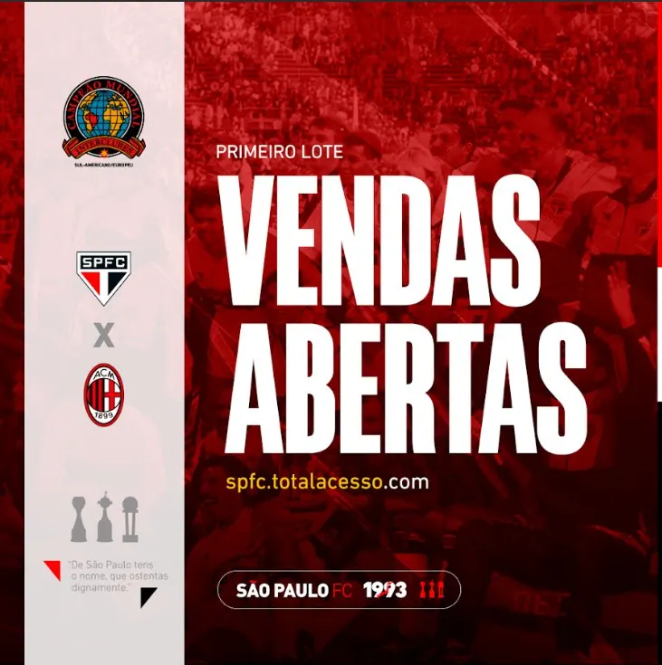

1/3saopaulofc Reencontro de Gigantes: abertura de vendas, anúncio do Seedorf e o convite para a festa no estádio.
13 perfis · 42 posts
Feeds para marcas de segmentos bem diferentes: futebol, alimentação, imobiliária, saúde, estética e varejo. Cada marca no seu próprio tom.
01 / 13
Reencontro de Gigantes: abertura de vendas, anúncio do Seedorf e o convite para a festa no estádio.

1/3saopaulofc Reencontro de Gigantes: abertura de vendas, anúncio do Seedorf e o convite para a festa no estádio.